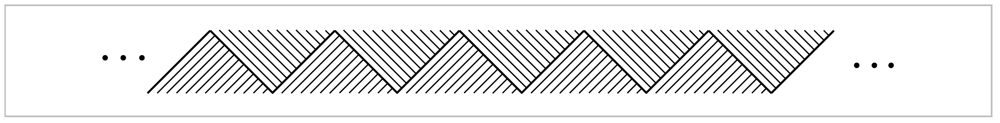

Exercises#
1. Construct an explicit deformation retraction of the torus with one point deleted onto a graph consisting of two circles intersecting in a point, namely, longitude and meridian circles of the torus.
2. Construct an explicit deformation retraction of \(\mathbb{R}^n-\{0\}\) onto \(S^{n-1}\).
3. (a) Show that the composition of homotopy equivalences \(X \rightarrow Y\) and \(Y\rightarrow Z\) is a homotopy equivalence \(X\rightarrow Z\). Deduce that homotopy equivalence is an equivalence relation.
(b) Show that the relation of homotopy among maps \(X \rightarrow Y\) is an equivalence relation.
(c) Show that a map homotopic to a homotopy equivalence is a homotopy equivalence.
4. A deformation retraction in the weak sense of a space \(X\) to a subspace \(A\) is a homotopy \(f_t : X\rightarrow X\) such that \(f_0 = \mathbb{1}, \, f_1(X) \subset A\), and \(f_t(A) \subset A\) for all \(t\). Show that if \(X\) deformation retracts to \(A\) in this weak sense, then the inclusion \(A \hookrightarrow X\) is a homotopy equivalence.
5. Show that if a space \(X\) deformation retracts to a point \(x \in X\), then for each neighborhood \(U\) of \(x\) in \(X\) there exists a neighborhood \(V \subset U\) of \(x\) such that the inclusion map \(V \hookrightarrow U\) is nullhomotopic.
{kind=link}
6. (a) Let \(X\) be the subspace of \(\mathbb{R}^2\) consisting of the horizontal segment \([0,1] \times \{0\}\) together with all the vertical segments \(\{r\} \times [0,1-r]\) for \(r\) a rational number in \([0,1]\). Show that \(X\) deformation retracts to any point in the segment \([0,1] \times \{0\}\), but not to any other point. [See the preceding problem.]
(b) Let \(Y\) be the subspace of \(\mathbb{R}^2\) that is the union of an infinite number of copies of \(X\) arranged as in the figure below. Show that \(Y\) is contractible but does not deformation retract onto any point.
{kind=link}
(c) Let \(Z\) be the zigzag subspace of \(Y\) homeomorphic to \(\mathbb{R}\) indicated by the heavier line. Show there is a deformation retraction in the weak sense (see Exercise 4) of \(Y\) onto \(Z\), but no true deformation retraction.
{kind=link}
7. Fill in the details in the following construction from [Edwards 1999] of a compact space \(Y \subset \mathbb{R}^3\) with the same properties as the space \(Y\) in Exercise 6, that is, \(Y\) is contractible but does not deformation retract to any point. To begin, let \(X\) be the union of an infinite sequence of cones on the Cantor set arranged end-to-end, as in the figure. Next, form the one-point compactification of \(X \times \mathbb{R}\). This embeds in \(\mathbb{R}^3\) as a closed disk with curved ‘fins’ attached along circular arcs, and with the one-point compactification of \(X\) as a cross-sectional slice. The desired space \(Y\) is then obtained from this subspace of \(\mathbb{R}^3\) by wrapping one more cone on the Cantor set around the boundary of the disk.
8. For \(n > 2\), construct an \(n\)-room analog of the house with two rooms.
9. Show that a retract of a contractible space is contractible.
10. Show that a space \(X\) is contractible iff every map \(f:X \rightarrow Y\), for arbitrary \(Y\), is nullhomotopic. Similarly, show \(X\) is contractible iff every map \(f: Y \rightarrow X\) is nullhomotopic.
11. Show that \(f:X \rightarrow Y\) is a homotopy equivalence if there exist maps \(g,h:Y \rightarrow X\) such that \(fg \simeq \mathcal{1}\) and \(hf \simeq \mathbb{1}\). More generally, show that \(f\) is a homotopy equivalence if \(fg\) and \(hf\) are homotopy equivalences.
12. Show that a homotopy equivalence \(f:X\rightarrow Y\) induces a bijection between the set of path-components of \(X\) and the set of path-components of \(Y\), and that \(f\) restricts to a homotopy equivalence from each path-component of \(X\) to the corresponding path component of \(Y\). Prove also the corresponding statements with components instead of path-components. Deduce that if the components of a space \(X\) coincide with its path-components, then the same holds for any space \(Y\) homotopy equivalent to \(X\).
13. Show that any two deformation retractions \(r^0_t\) and \(r^1_t\) of a space \(X\) onto a subspace \(A\) can be joined by a continuous family of deformation retractions \(r^s_t\), \(0 \leq s \leq 1\), of \(X\) onto \(A\), where continuity means that the map \(X \times I \times I \rightarrow X\) sending \((x,s,t)\) to \(r^s_t(x)\) is continuous.
14. Given positive integers \(v, \, e\), and \(f\) satisfying \(v-e+f = 2\), constructy a cell structure on \(S^2\) having \(v\) \(0\)-cells, \(e\) \(1\)-cells, and \(f\) \(2\)-cells.
15. Enumerate all the subcomplexes of \(S^{\infty}\), with the cell structure on \(S^\infty\) that has \(S^n\) as its \(n\)-skeleton.
16. Show that \(S^\infty\) is contractible.
17. (a) Show that the mapping cylinder of every map \(f:S^1 \rightarrow S^1\) is a CW complex.
(b) Construct a \(2\)-dimensional CW complex that contains both an annulus \(S^1 \times I\) and
a Möbius band as deformation retracts.
18. Show that \(S^1 * S^1 = S^3\), and more generally \(S^m * S^n = S^{m+n+1}\).
19. Show that the space obtained from \(S^2\) by attaching \(n\) \(2\)-cells along any collection of \(n\) circles in \(S^2\) is homotopy equivalent to the wedge sum of \(n+1\) \(2\)-spheres.
{kind=link}
20. Show that the subspace \(X \subset \mathbb{R}^3\) formed by a Klein bottle intersecting itself in a circle, as shown in the figure, is homotopy equivalent to \(S^1 \vee S^1 \vee S^2\).
21. If \(X\) is a connected Hausdorff space that is a union of a finite number of \(2\)-spheres, any two of which intersect in at most one point, show that \(X\) is homotopy equivalent to a wedge sum of \(S^1\)’s and \(S^2\)’s.
22. Let \(X\) be a finite graph lying in a half-plane \(P \subset \mathbb{R}^3\) and intersecting the edge of \(P\) in a subset of the vertices of \(X\). Describe the homotopy type of the ‘surface of revolution’ obtained by rotating \(X\) about the edge line of \(P\).
23. Show that a CW complex is contractible if it is the union of two contractible subcomplexes whose intersection is also contractible.
24. Let \(X\) and \(Y\) be CW complexes with \(0\)-cells \(x_0\) and \(y_0\). Show that the quotient spaces \(X * Y / (X *\{y_0\} \cup \{x_0\} *Y)\) and \(S(X\wedge Y)/S(\{x_0\} \wedge \{y_0\})\) are homeomorphic, and deduce that \(X * Y \simeq S (X \wedge Y)\).
25. If \(X\) is a CW complex with components \(X_\alpha\), show that the suspension \(SX\) is homotopy equivalent to \(\bigvee_\alpha SX_\alpha\) for some graph \(Y\). In the case that \(X\) is a finite gprah, show that \(SX\) is homotopy equivalent to a wedge sum of circles and \(2\)-spheres.
26. Use Corollary 0.20 to show that if \((X,A)\) has the homotopy extension property, then \(X \times I\) deformation retracts to \(X \times \{0\} \cup A \times I\). Deduce from this that Proposition 0.18 holds more generally for any pair \((X_1, A)\) satisfying the homotopy extension property.
27. Given a pair \((X,A)\) and a homotopy equivalence \(f:A\rightarrow B\), show that the natural map \(X \rightarrow \sqcup_f X\) is a homotopy equivalence if \((X,A)\) satisfies the homotopy extension property. [Hint: Conisder \(X\cup M_f\) and use the preceding problem.] An interesting case is when \(f\) is a quotient map, hence the map \(X \rightarrow B \sqcup_f X\) is the quotient map identifying each set \(f^{-1}(b)\) to a point. When \(B\) is a point this gives another proof of Proposition 0.17.
28. Show that if \((X_1, A)\) satisfies the homotopy extension property, then so does every pair \((X_0 \sqcup_f X_1, X_0)\) obtained by attaching \(X_1\) to a space \(X_0\) via a map \(f:A \rightarrow X_0\).
29. In case the CW complex \(X\) is obtained from a subcomplex \(A\) by attaching a single cell \(e^n\), describe exactly what the extension of a homotopy \(f_t: A \rightarrow Y\) to \(X\) given by the proof of Proposition 0.16 looks like. That is, for a point \(x \in e^n\), describe the path \(f_t(x)\) for the extended \(f_t\).